GitHub Setup and Resources#

GitHub Account Creation#
Navigate to github and sign up using your afacademy email.
Once you created an account message Grant Stec a teams message and he will invite you to the github repo so you can edit.
On github you can now access the repository called “BlueHorizon-Website” found here
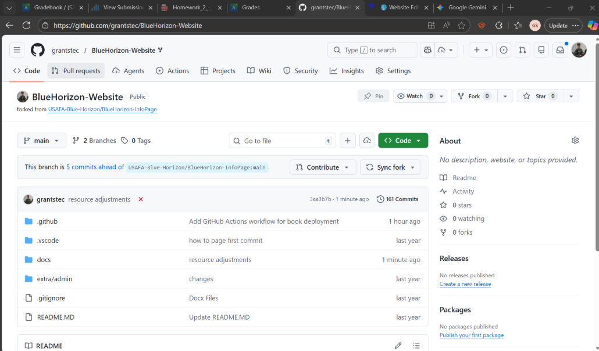
Creating your own branch#
Creating your own branch gives you a workspace where you can edit files and push to that branch without crashing the whole website.
navigate to the tab called “Branches” as seen in the picture below
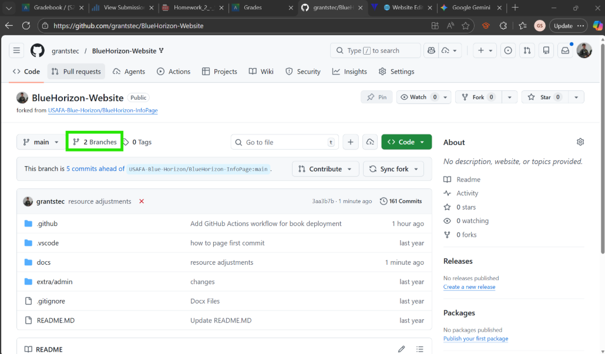
You should now see the names of the different existing Branches on this repository.
Name your branch based on your name. To make your branch hit the bright green “New Branch” button, name it, keep all the other settings that same and hit “Create New Branch”. Now you should see your branch listed on the Branches page.
Downloading GitHub Desktop#
Download from this link: Download GitHub Desktop | GitHub Desktop
Open the downloaded exe file and go through the installation setup
It will automatically open the app and then sign in through GitHub.com
GitHub Desktop Setup#
Use default setup/do not configure manually, just hit finish
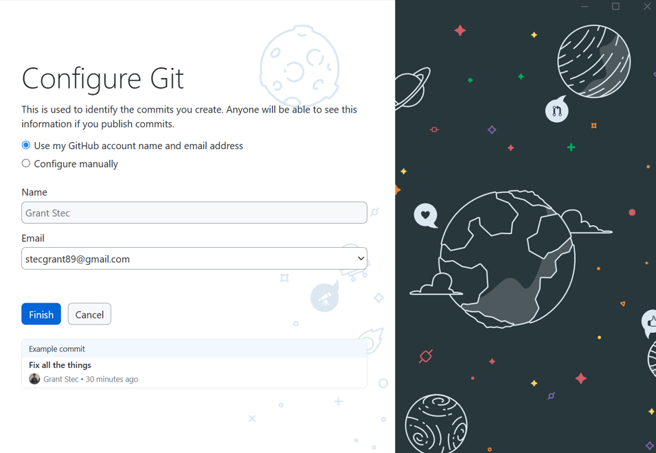
Clone the repository from the internet
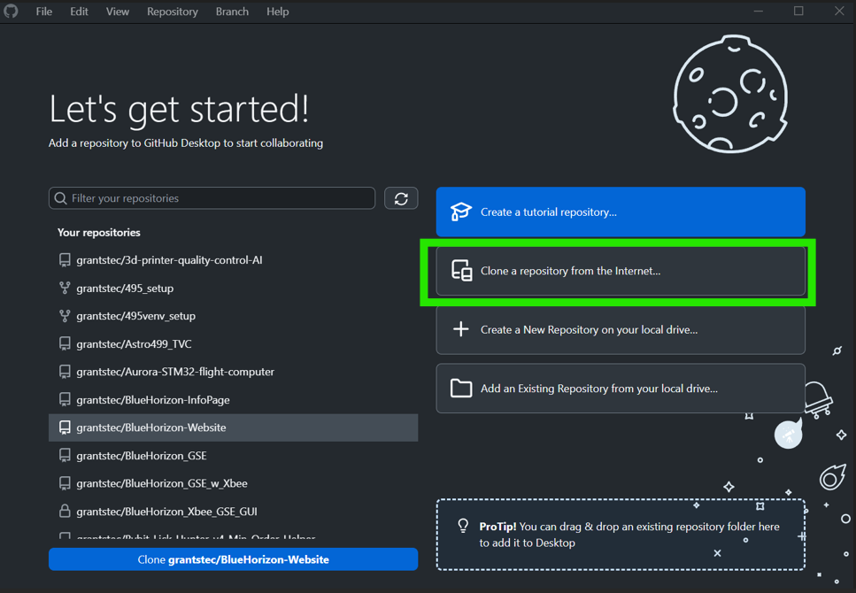
Search for “website” and chose the BlueHoirzon-Website.
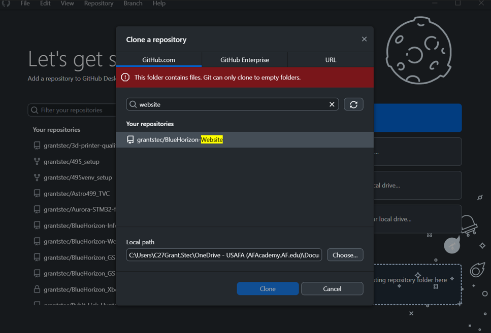
If you get a message saying “This folder contains file. Git can only clone to empty folder.” You need to choose a folder location locally on your computer, I often just select my Desktop or Documents
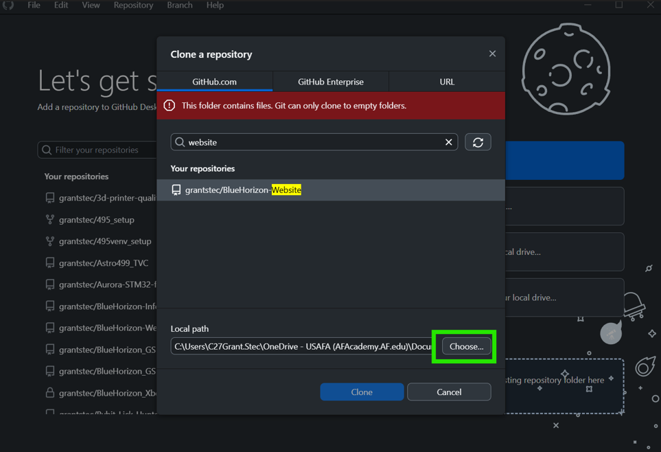
Now you should see a screen like this
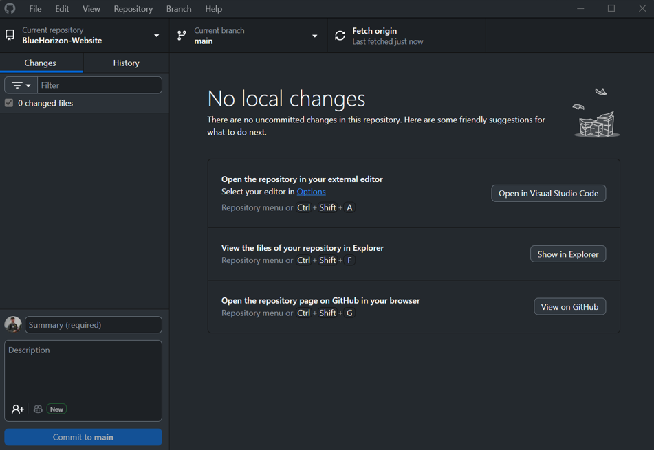
GitHub Desktop Branch Selection Setup#
Ensure to select your branch from the current branch dropdown
“main” should not be selected
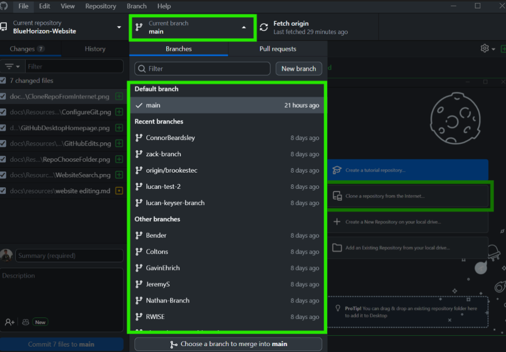
Committing and Pushing Changes#
Once you have made edits to the webpage files through Obsidian Setup and Website Editing you need to commit and push your changes to your GitHub Branch
You should see a screen like this in the GitHub Desktop showing the edits and additions you have made
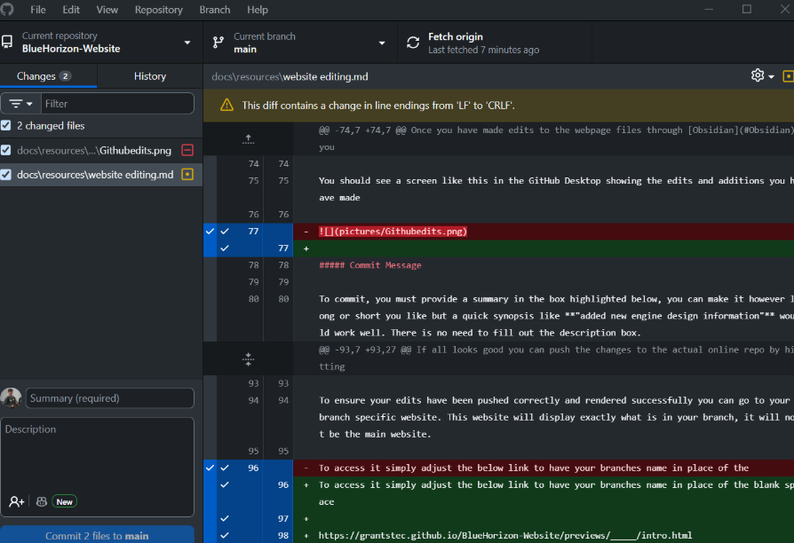
Commit Message#
To commit, you must provide a summary in the box highlighted below, you can make it however long or short you like but a quick synopsis like “added new engine design information” would work well. There is no need to fill out the description box.
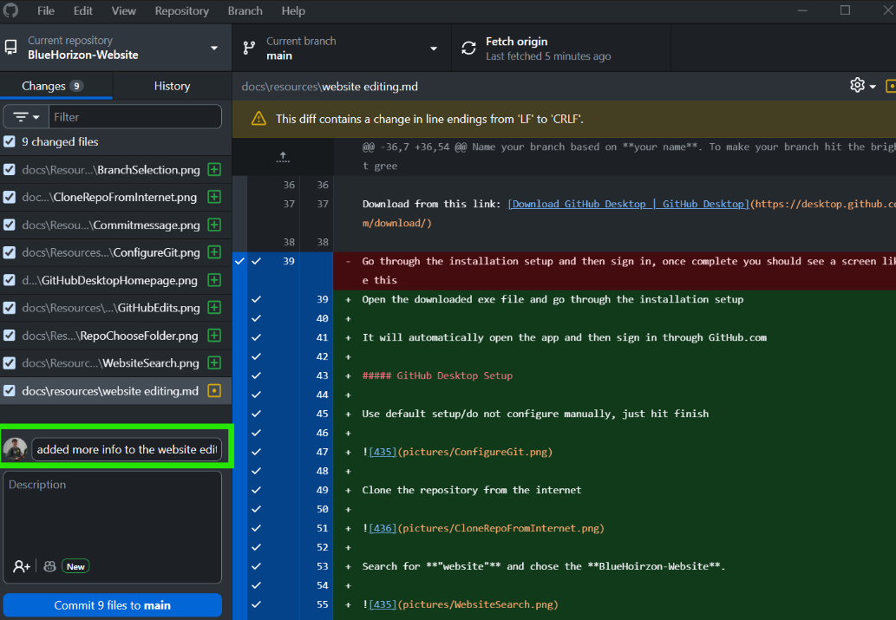
Once something is typed in you will see the “Commit _ files to main” button glow up. Click it.
Pushing#
If you made a mistake or want to edit the summary message you can undo the commit by hitting the undo button on the bottom left.
If all looks good you can push the changes to the actual online repo by hitting “Push Origin”
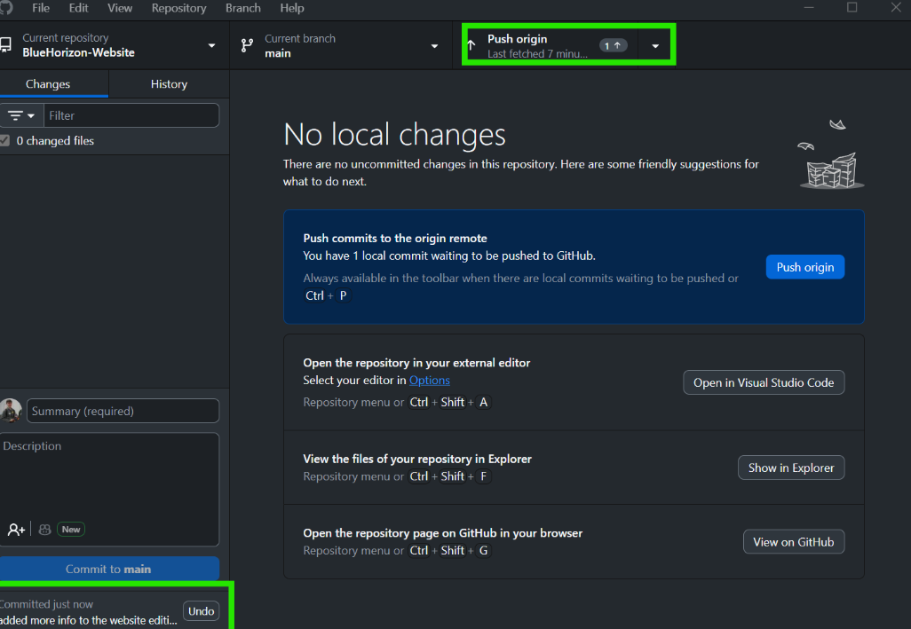
Accessing Your Branch Specific Website#
To ensure your edits have been pushed correctly and rendered successfully you can go to your branch specific website. This website will display exactly what is in your branch, it will not be the main website.
To access it simply adjust the below link to have your branches name in place of the blank space
https://grantstec.github.io/BlueHorizon-Website/previews/_____/intro.html
You can also access from the quick links below or the auto updating README page on the GitHub repo home page here
Branch Preview Quick Links#
alexander-agrawal-branch - branch: alexander-agrawal-branch
Bender - branch: Bender
Coltons - branch: Coltons
ConnorBeardsley - branch: ConnorBeardsley
ethan-branch - branch: ethan-branch
GavinEhrich - branch: GavinEhrich
JeremyS - branch: JeremyS
lucan-keyser-branch - branch: lucan-keyser-branch
lucan-test-2 - branch: lucan-test-2
Nathan-Branch - branch: Nathan-Branch
origin/brookestec - branch: origin%2Fbrookestec
RWISE - branch: RWISE
zack-branch - branch: zack-branch
Pulling Updates from Main#
First make sure you have committed and pushed all of your changes so your github desktop looks blank like this
Then hover over the Branch button on upper left and select Update from main
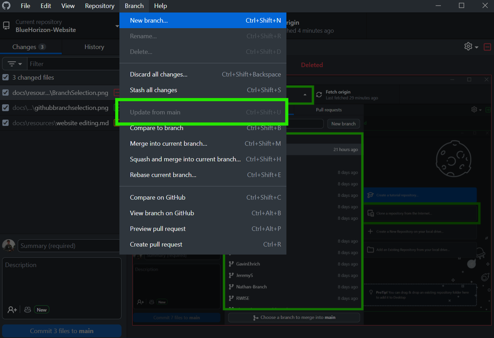
This will keep any changes you have made while also updating all other documents from main. If you happen to make changes to documents also changed in the main, you will get a merge conflict and will need to sort that out by selecting which information you want to keep and which you want to remove, or add both.
Updating Main Page#
Once you commit ahead of main branch and push to your own branch and check that everything looks good then submit a pull request to main and then message Grant Stec on teams.
Submitting A Pull Request#
Hover over the Branch button on upper left and select Create Pull Request
This will navigate you to the web to finalize creating the pull request
Ensure the base is main and you are comparing with your branch, this should be auto filled in.
Add a title and then scroll down and click “Create Pull Request”
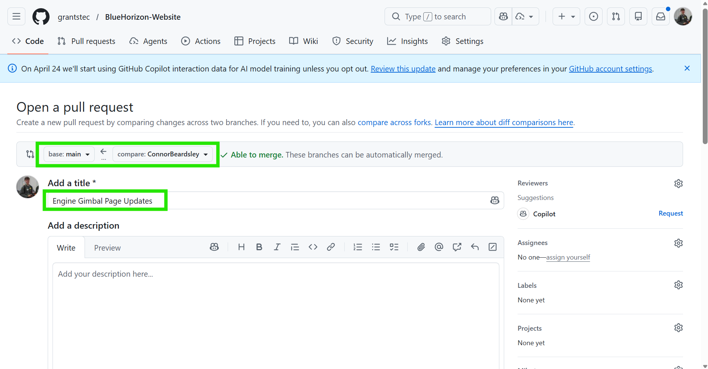